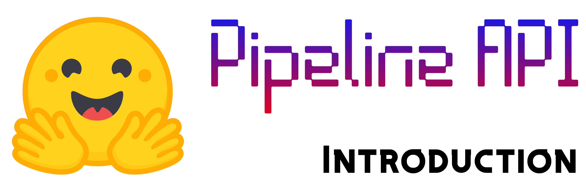

Introduction
Natural Language Processing is a fast-advancing field. And it is also one of the fields that require a huge amount of computational resources to make important progress. And although breakthroughs are openly announced, and papers are released in free-to-access repositories such as arXiv, Open Review, Papers with Code, etc., and despite (sometimes) having the code freely available on GitHub, using those language models is not something widely accessible and easy.
Let me provide more context. BERT is a state-of-the-art encoder language model. It takes days to train the model from the ground up even when using very powerful GPUs that only a few entities have access to. In 2019, NVIDIA used 1472 NVIDIA V100 GPUs to train BERT from scratch in 53 minutes. Yes, 1,472!
One estimate puts the cost of training GPT-3, a 175 billion parameter model, for a single training run at $12 Million USD.
And such language models are released every now and then. How do you use these powerful language models for your task?
Here Hugging Face comes to the scene. They aim to solve this problem by providing pre-trained models, and simple API so that you can use them, fine-tune them, and use the API in your applications.
In this article, my goal is to introduce the Hugging Face pipeline API to accomplish very interesting tasks by utilizing powerful pre-trained models present in the models hub of Hugging Face.
To follow through this article, you need not have any prior knowledge of Natural Language Processing. I, however, assume minor prior experience in writing Python code.
In this article, I will go over, describe, and provide examples for the following tasks using Hugging Face pipeline-
- Sentiment Analysis
- Zero-Shot Classification
- Text Generation
- Mask-Filling
- Named Entity Recognition
- Question Answering
- Summarization
- Translation
Installing and Importing
! pip install transformers[sentencepiece] > /dev/nullIf you have not seen a pip install with a square bracket in it before, don’t worry. It means that you are installing the transformers package with extra support added for the sentencepiece package. You can find out more about square parentheses installs in pip here.
We will use the utilities available in the pipeline namespace in the transformers library.
Sentiment Analysis
Before I begin going through the specific pipelines, let me tell you something beforehand that you will find yourself. Hugging Face API is very intuitive. When you want to use a pipeline, you have to instantiate an object, then you pass data to that object to get result. Very simple! You are soon to see what I mean.
That’s it. You call the pipeline() method with the task you want to accomplish as an argument. And you assign a name to it. You are done now. You can now begin to use the object as a function to achieve what you want. Let’s see an example-
See, it returns a dictionary contained in a list that has two items, label and score. The label part tells us its prediction, and the score tells us its confidence score.
As an aside, I think they are structured this way because this structure is easily compatible with
.jsonand similar filetypes which are very common in APIs.
Let’s see another example.
See, how the classifier is aware of my emotion about pineapple pizzas? 🙃
Zero-Shot Classification
When you want to classify something using Deep Learning, in many cases you need to train it with labeled examples. This approach is known as Supervised Learning. Even when leveraging transfer learning, you need to train your model with quite a few labeled examples in the domain of your choice. Zero-shot classification is different than that. In this, you use a pre-trained model to classify a given string and some labels of your choice. The model returns you the confidence score for each model.
Let me show you how this works. First, you instantiate an object and assign it a name just like you did in the case of the Sentiment Analysis pipeline.
Then you pass a string, along with the labels of your choice to test how well they correspond to your sentence.
See, the given sentence is about a profession, and the model tells you that. And it knows that it is much more related to education than politics.
Essentially, when you are doing Zero-Shot Classification, you are supplying a string to the pipeline, and also labels. The pipeline returns how accurate those labels are.
Text Generation
Before I heard about Deep Learning, I heard about Natural Language Processing, because I heard that you can generate text with it! This is the most exciting part of NLP to me, personally.
As the name suggests, this pipeline lets you generate text. It just needs you to supply a prompt, a text that will determine what the generated text will be. Let me show you how.
See what I mean! Even with zero training, it can create logically coherent text that is even interesting to read. Robots will take over writers soon 🤖!
You can control the maximum length of the output of the pipeline, and even ask for multiple possible outputs, like so-
Whoa, it’s poetic!
We can accomplish more interesting things with transfer learning. But that is a story for another day.
Mask Filling
In this pipeline, if there is a word that you hide and supply the string with the hidden word, the pipeline will predict that word. This is like magic!
You pass the sentence with the masked word, and it will predict it. You can choose the number of predictions you want to see. You just have to pass a value to the top_k parameter.
It can predict the words quite well. Just remember to mask the word using <mask>.
Named Entity Recognition
This pipeline recognizes the proper nouns in your sentence. And it also classifies them. Let’s see an example.
The grouped_entities parameter just ensures that the pipeline can recognize the names that have more than one word, like, you know, Chocolate Factory.
See how it recognizes a person, his profession, and location on its own, and also labels them as “PER”, “ORG”, and “LOC” (meaning location), respectively.
Question Answering
This pipeline provides you with an answer to a question you ask from the context that you provide.
It can answer multiple questions from the same prompt.
Summarization
This is one of the most practical tasks that has existed for a long time. Deep Learning really changes the landscape of the task.
Let’s see it in action.
Let’s summarize a piece of text from a blog post I recently read.
Now, that’s something! The efficacy of the summarizer really shocked me. It does this task so well.
Translation
The translation pipeline translates a piece of text from one language to another. It also lets you choose the language model of your choice.
First, let’s translate a text from English to German. I will use the Helsinki-NLP/opus-mt-en-de model for this task.
Note that you are not explicitly telling the model about the language of the input language or the output language. A language model is only trained for translating from one language to another. It cannot translate other languages. If you want to translate from German to English, you’d have to use another model from the model hub. You can find all the translation models here.
The cool thing is that Hugging Face is not limited to Romance languages or European languages in general. Let me show you by translating a piece of text from Bengali.
Conclusion
I have shown you several pipeline APIs and what they do and how they work.
Here are the suggested next steps-
- Experiment. Play with the
pipelines by yourself, try different things with different parameters, run inference on examples of your own, test edge cases, run wild with it. I believe that is the best way to learn. - Do Projects. Use the knowledge you gained here in simple projects. We only learn by doing.
- Hugging Face Course. Hugging Face has recently released a free course where they teach you about Transformers and their library ecosystem. It is a good next step.
- Explore. Explore the Hugging Face website, learn more about their APIs, Services, pre-trained models, and many more things it has to offer.
If you notice any error, mistake, or typo, please feel free to let me know. If something is not clear, please let me know that as well. I will do my best to correct it and will credit you here.
Let me know if you have any questions at all.
(Originally published as a Notebook on Kaggle.)